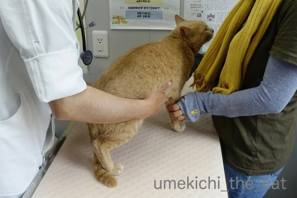
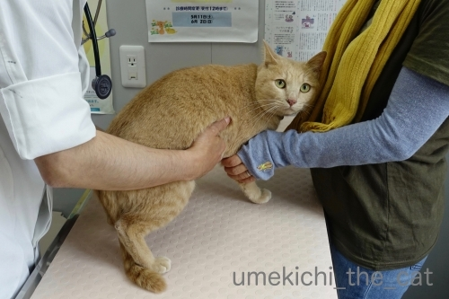
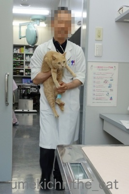
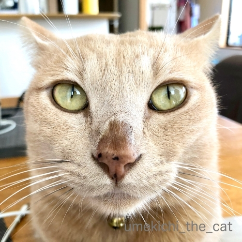
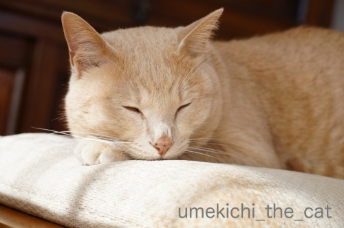
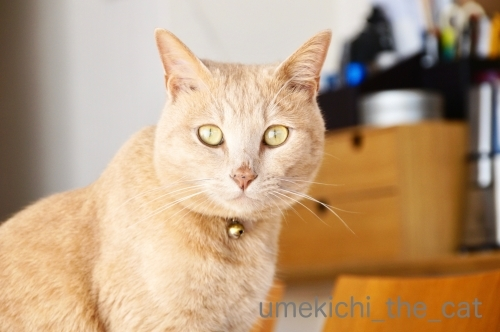

それはココロの汗、だった [梅吉]
先週末、梅吉の定期診察のため病院へ行って来ました。
（梅吉は中性脂肪値が高いので定期通院が必要です。
生活習慣病ではなくて体質。お薬と病院は一生のおつきあいになります。
詳しくは審判の下った日をどうぞ。）

いつものようにお腹をもみもみ。
腸の働き具合を触診してもらってます。

という視線(⌒-⌒;
「うーわー」言ってましたけどこの日は「シャーーーっ！」は無かったです。
ちょっとつまんないw

採血後、先生に抱っこされて戻って来た様子です。
採血の結果、中性脂肪値をもう少し下げたいなぁ・・・ということで
水薬の濃度を少し濃くして与えることになりました。
お薬、まだ手探りが続いております。
で、今日の本題。
ちょうど診察を受けている最中に梅吉のお鼻が「にじにじ」状態に！
にじにじってこれです。

にじにじMAXの梅吉さんw（診察時の写真ではありませんが）
お鼻の上の方まで濡れて滲んだ感じになっていますよね。
湿度の高い時になるのでは？と思っていたのですがそうでも無い事が多々。
（『湿度高い時になる説』の記事はこちらです）
ちょうど良い機会なので先生に「汗ですか？」と聞いてみました。
答えは「涙です。」でした。
人間も猫も鼻涙管という目と鼻をつないでいる管があるそう。
泣くと涙が鼻からも出て（鼻水ともいうw）しまうのはこの為だと。
梅吉も何かの加減で涙が多くなった時に鼻涙管を通った涙がお鼻の上の方に溢れ出る
ということのようです。
普通は涙が下がって来たら鼻から出るか
喉を通って行くと思うのですが梅吉はお鼻の上部に滲み出る体質w
そして涙が多め？
「梅吉くんは瞳が潤っているんだねー」「ドライアイじゃ無いんだねー」
というお話で心配するようなことではありませんって。
逆にいつも目の周りが涙がちな時は鼻涙管の病気の可能性もあるそうです。
ちなみに猫が汗をかくのは肉球。
梅吉は見た事ありませんが
先代猫は病院に行くと緊張して診察台の上に大判の汗の肉球印を押してました(≧▽≦)

（ちょっぴりにじってます）
鼻に「ココロの汗」をかく『漢 梅吉』。
『漢』たるもの涙は流しませんか？(*>艸<)

（これもちょっぴりにじってます）
※「涙は、涙は心の汗なんだぁー！」って昔のドラマのセリフ、ご存知ですか？(*>艸<)※

カフェオレ色の梅吉

梅吉 2023年8月10日 永眠


梅吉と出会った譲渡会

犬猫の理由なき殺処分ゼロ
妄想広告
UMEKICHI 光

爆発的に早い！
時々攻撃的！
Thanks to Mr.Boss365
爆発的に早い！
時々攻撃的！
Thanks to Mr.Boss365

梅吉さんのお鼻すごく濡れてますねー。毛色が薄いから目立つのかな。うちのゴンやコバンもよく涙は流してますが鼻は濡れないので、鼻に伝わりやすい体質かもしれませんね。お医者さんが怖くて泣いちゃったんじゃないですよね?
by zombiekong (2019-06-06 02:44)
実家のミイちゃんは肉球に汗！の子です。
梅吉さんは涙ですか〜^m^
涙なのにお鼻がにじんじゃうんですね。
鼻が濡れて健康状態がわかるってのじゃないのですね〜。
それはワンコか(^^;;
by ChatBleu (2019-06-06 05:54)
ニャンは肉球から汗が出るので
夏場のうちのニャン達の肉球は湿ってます。
病院に行くと冷や汗も出るみたいで
スタンプが付きますね＾＾
by ぽちの輔 (2019-06-06 06:19)
お鼻汗かとおもったら・・、涙とは驚きました。
by ニコニコファイト (2019-06-06 06:55)
そっかぁ、梅吉さんは「漢」だから、涙は見せないんですね=(^.^)=
うちは大御所がアレルギー体質で涙目になりやすいので
目薬が欠かせません(⌒-⌒; )
のほほん甘えっ子大御所は涙を見せるのも気にしないみたいですw
うちのニャンズたち、皆診察台に梅の花咲かせまくります(⌒-⌒; )
by ニッキー (2019-06-06 07:36)
梅吉さん 定期検診お疲れ様ね
ウルウル キラキラ その目目で見つめられると ドキューン♪
by チャー (2019-06-06 08:56)
涙だったのですね！
知りませんでしたぁ(;^_^A
漢は涙を見せずに（笑
さすが梅吉さんですね♪
by きぃ (2019-06-06 09:00)
>この日は「シャーーーっ！」は無かったです。
>ちょっとつまんないw
わらっちゃったよｗｗ
シャーがないのは良いこと良いこと(笑)
にじにじの正体は涙だったとは！！勉強になりました。
確かにあおが結膜炎になったとき、診察室で目をじょーーーって洗って貰ったの。そしたら洗浄液が鼻からどばーって出て、先生が
「この子は鼻の通りが良いな〜」って笑っていたのよね。
つながってるもんね！！
・・・ってことは、あおも甘えモードのときの鼻水は涙？？？
by リュカ (2019-06-06 09:15)
こんにちは。
梅吉君、良い子にしていますね。視線が可愛い！！
お鼻？「にじにじ」ですね。涙？涙腺から漏れている感じかな？
凄いです。勉強になりました。
人前で涙を見せない梅吉君、男の子ですね。「漢 梅吉」好漢が持てます。
昔のドラマ？われら青春かな？
帰らざる日のために・・・・生まれてきたのはなぜさ！！ですね！？(=^･ｪ･^=)
by Boss365 (2019-06-06 10:47)
なるほどー！
そういう仕組みでしたか。
今回は勉強になりました！！
by よーちゃん (2019-06-06 11:01)
にじにじは涙だったのね～！！
ウチのは肉球びっしょり派。
キャリーケースの中も診察台もスタンプだらけになります(≧▽≦)
眼はどちかというと涙少な目なのか乾燥すると目やにがでます。
同じ猫でも体質はほんとそれぞれですね。
涙は心の汗さ～たっぷり流してみようよ～♪ですね(^_-)-☆
by ゆきち (2019-06-06 12:28)
梅吉さん、涙だったのですね！
by ma2ma2 (2019-06-06 16:08)
にじにじｗ
そういうことなんですね！！
漢は涙を流さない！かっこいいっ(≧∀≦)
病院でこんなにいいコでいられるなんて
すばらしいですよ♪うちは暴れん坊なのでネット必須です(笑)
うちも脂肪多めでしょうね＾＾おニャかがぶよんぶよんだしｗ
by カトリーヌ (2019-06-06 17:55)
診察したり写真撮ったり忙しいニャ（ﾟ□ﾟ）
涙なのに何故鼻が濡れるのか？
と思ったらちゃんと解説してあった、なるほどね。
by 英ちゃん (2019-06-06 17:57)
梅吉先生！レッツ、ビギン！^ ^
by 小松達也 (2019-06-06 18:53)
梅吉さん、頑張ったんですね、偉い！
心の涙がそれを語ってますね(^_^)
by kou (2019-06-06 19:04)
俺の鼻水とはちょっと違うわけですね
知らなかった
by (。・_・。)２ｋ (2019-06-06 19:24)
「シャー」は最近、毎日ユキがします。
チビに向かって。
あとどれくらい続くのか観察中です。
「シャー」が見れて嬉しいような、嬉しくないような複雑な気持ちです＾＾
by riverwalk (2019-06-06 20:57)
梅吉さん、診察台の上で神妙な顔つき（笑）
グッと我慢強かったのですね。
ちぃさん、『シャーーーっ！』
を密かに期待していたのは面白いです（笑）
梅吉さんの『にじにじ』は涙だったのですね。
悲しいことの目から涙でなく、鼻水（笑）
男は鼻水くらいでしょげません！
by kiki (2019-06-06 21:31)
梅吉さん、定期診察お疲れ様でした。
あ、ウチも（私設）腸触診やってます！
よく分からないけれど、触って痛がらないようならいいかと思ってますが、本ニャンはすごく気持ち良さそうな顔をして、そのうち寝てしまいます。^^;
鼻先が濡れているのは涙だったのですね。知りませんでした。
でも心配ないようでよかったですね。^^)
「涙は心の汗」、ドラマのタイトルもストーリーもまったく覚えていませんが、曲のフレーズだけは覚えています。^^;
by yes_hama (2019-06-06 21:40)
「涙は心の汗」う～ん聞いた事はあるけれど
なんのドラマだったか思い出せません～
過去記事も拝見しました
定期検査や薬で体調管理しないといけないんだって
梅吉君ちゃんとわかってるんですね
by 藤並 香衣 (2019-06-06 23:35)
涙！なんと！ 知らなかったです。
診察がツラくて泣いちゃったのかしら？
ニジニジのアップ写真も男気ただよう顔に見えてきて
きゅんとしちゃいました♡
by liang (2019-06-07 11:49)
涙は心の汗さ~たっぷり流してみようよ~♪
って歌詞の曲があったと思われます。歌っていたのは
中村雅俊？でしたっけ。遠~い記憶。
梅吉さん・・・鼻から汗をかいていたなんて！デキる漢は違うのね(^^
うちはタルちゃんが結構涙目っぽいのでその鼻涙管が詰まっているかも？
なのでしょうか。結膜炎かな？とも思うんですけどね、特に指摘されたこともなく。
汗の肉球印・・・私は見たことないです。
by marimo (2019-06-07 16:43)
にじにじの正体は涙だったのですね！はっきりしてスッキリしましたね(≧▽≦)
涙は心の汗…ああ分かるとも！今見たらきっと突っ込みどころ満載でしょうねあのドラマ(;^ω^)
by palpal (2019-06-07 20:54)
zombiekongさん＞
そうそう！滲みが目立つのはお顔の色のせいもありますよね。
きっと目立たないだけで
こうなっている子は他にもいるんじゃないかと思ってます＾＾
梅吉に限って獣医が怖くて泣く、はなさそうですw
「ぱんち かましたる」とは思ってそうですけどwww
ChatBleuさん＞
梅吉も夏場にはいつも肉球がじっとり汗ばんでますが
病院でそれがひどくなることは無いようです(⌒-⌒; )
涙成分でこんな風に滲んじゃうなんてねー！
鼻水ずるずるよりもおもしろかわいくて良いかもって(*>艸<)
にゃんこも調子の悪い時はお鼻乾きますよね。寝起きもだけど。
梅吉のお鼻にじにじが見られなくなったら心配しちゃうかも。
ぽちの輔さん＞
梅吉も夏場は肉球がじっとり汗ばんでます＾＾
で、匂いを嗅ぐといつもよりもかぐわしい気がしまーす(*>艸<)
ほら、湿っぽいと匂いって伝わりやすいですよね（爆）
ニコニコファイトさん＞
鼻水、とも言えると思いますが
ここは美しく涙でお願いします(^_－)☆
ニッキーさん＞
アレルギーで涙目、にゃんこもニンゲンも一緒ですね。
のほほん甘えっ子さんゆえ、ちゃんと目薬を点させてくれるのが羨ましいです！
梅吉はまだ未体験ですが絶対無理な気がして(⌒-⌒; )
漢だって時には涙することもあって良いですよねー。
梅吉、大御所様から教えを受けなきゃ、です！
チャーさん＞
ウルウル キラキラでおやつをねだってくるので困りますwww
きぃさん＞
ね！涙でこんな風になっちゃうんですねw
先代猫は玉ねぎ切っていると涙ポロリしてたんですが
梅吉は無反応です(*>艸<)
リュカさん＞
「シャーーーっ！」の顔って大好きなんだけど
病院でしか言ってくれないから密かに楽しみにしてるんだけどw
前回は先生に猫パンチ（空を切る）してたから
今回は何があるかなって期待しちゃった^^
あおくんチュパチュパフミフミ時の潤いは
鼻の穴から出ているのかしら・・・でも、涙！です！！
と言うことにしましょうよー(*>艸<)
梅吉は鼻の穴から出てないので涙(*>艸<)(*>艸<)
Boss365さん＞
病院では「わぁー！わぁぁぁー！！」泣きますが
暴れることはないです＾＾
先生に猫パンチをかまそうとしたことはありますが
概ねよいこで助かります(*>艸<)
ドラマ、私は曖昧な記憶で「夕陽ヶ丘・・・？」とか「とびだせ？？」
中村雅俊さんだけは記憶してましたがちゃんと調べたら
「われら青春」で正解です！さすが〜(^_－)☆
よーちゃん＞
そうなんです！私も勉強になったし
理由がわかってスッキリしましたw
ゆきちさん＞
涙とは私もびっくりでした！理由がわかってスッキリでーす＾＾
肉球に汗握るこてつくん(*>艸<)
鬱積した気持ちは猫母さんへの猫パンチでスッキリなんでしょうかw
涙成分多めの梅吉の目やにはねば〜っとしたものがついていることが。
猫のねばっとした目やには「ムチン」が成分なんですって。
オクラとかのネバネバ成分。猫の目やにって体に良いのかしら(≧▽≦)
ドラマ、タイトルとかはあやふやだったんですが（中村雅俊だけクリアー）
歌はよく覚えてます♪
ma2ma2さん＞
鼻水ではなくて涙でした＾＾
カトリーヌさん＞
おお！みゅうたん暴れん坊でしたか！！
やりますねー＾＾お若いお若い0(≧▽≦)0
梅吉は文句言いながらも受け入れている感じw
関西人に多いぼやき系って事でしょうか(*>艸<)
英ちゃんさん＞
病院行くと色々忙しいのですよ！
先生も「この夫婦アホやなw 」って思ってるかもしれませんw
お鼻ににじにじ〜。
珍しいかと思いきや先生は即答だったので
ありがちなのかもしれません＾＾
小松達也さん＞
背中を押されて飛びつき始めたらご報告しますよ(^_－)☆
kouさん＞
病院、頑張りました＾＾偉いでしょー！
心の涙は先生に猫パンチできなかった悔しさかもwww
2kさん＞
「鼻水が絵になる男」もいるはずです！
ぜひ目指してください(*>艸<)
by ちぃ (2019-06-09 16:16)
こんにちは。別件ですが、
「Grant Green」に共感して頂きありがとうです。
映画「オーシャンズ11」シリーズに使われそうな音楽気に入っています！？(=^･ｪ･^=)
by Boss365 (2019-06-09 17:34)
え？しゃーはなかったけど、もしかして診察つらくて涙が…？
涙とはおどろきでした。
でもこっち見る目がカワイイ。
by ふにゃいの (2019-06-09 17:47)
riverwalkさん＞
にゃんこ同士の「シャー」はご挨拶みたいなものでしょうか＾＾
ケンカにならないのなら仲良くなれる可能性大！
いっときのユキちゃんのシャー、お楽しみください！！
kikiさん＞
『シャーーーっ！』のお顔って可愛くて(⌒-⌒;
ついつい期待してしまいましたw
漢 梅吉は涙は流さないようですよ。
涙は鼻の上に滲ませて笑いを取る！
大阪の子やなぁ・・・(*>艸<)
鼻の穴から出ていないので鼻水ではなくて『涙』で
お願い致しますm(_ _)m
ひとつよろしくお願い致しますm(_ _)m
yes_hamaさん＞
お！hamaさんゴッドハンドですねー(*>艸<)
私も時々触診してますがゴロゴロ言い始めて振動でよくわからなくなったり
ダンゴムシの様に絡みつかれて戦いになったり、ですwww
お鼻にじにじは４年間の謎が溶けてすっきりしました〜。
「涙は心の汗」わたしも「中村雅俊？夕陽ヶ丘？？飛び出せ？？」と
曖昧ワードばかりでしたが「われら青春」主演中村雅俊ってこちらもスッキリ！
藤浪 香衣さん＞
そうそう！私もなんだったっけ？とあやふやでしたが
皆さんのコメントから「われら青春」中村雅俊主演がはっきりしました。
♪うまれてきたのは な〜ぜさっ！♪のフレーズも憶えてます＾＾
過去記事までご覧になっていただいてありがとうございますm(_ _)m
一生病院＆お薬はちょっと悲しくなっちゃいますが
定期的に健康管理ができて良いかなと思うことにしています。
幸い梅吉は病院で酷く怯えたりしないので助かってます＾＾
liangさん＞
私も猫のことは色々知った気でいましたが
「涙とは！」とびっくりでした。
にじにじ顔はコアラみたいで何をやってもちょっとお間抜けに見えてwww
そこがまた可愛いのです〜0(≧▽≦)0
marimoさん＞
そうそう！その歌、中村雅俊が歌ってたんですね！
私は複数人で一緒に歌ってた記憶だったんですが色々バージョンがあったのかな。
幼い頃の記憶はごっちゃになってますwww
あららタルさんの涙目はちょっと気になりますね。
ひどいと涙焼けと呼ばれる症状になるそうなんですが
お写真から見るとタルさんはその状態ではないような・・・
肉球印は未見ですか。
お嬢様方意外に肝が座っているとお見受けしました(≧▽≦)
palpalさん＞
涙は心の汗系のドラマは
まだ突っ込むことも知らない純粋な時代でしたが（爆）
その後の臭い系のドラマ「スクールウォーズ」とかは
突っ込みながらも楽しんで見てましたwww
Boss365さん＞
わざわざコメントありがとうございます！
「オーシャンズ１１」確かに＾＾
タランティーノも使ったりしてたかも・・・
ふにゃいのさん＞
診察が辛い・・・梅吉に限ってはそれは無いです(*>艸<)
「はらたつわー！むかつくわー！！」の悔し涙はありですけどwww
涙多めでも目の周りが赤くなったりしていないので
健康な潤いってことでしたー＾＾
目が可愛いのは潤いのせいかしら♪
by ちぃ (2019-06-09 21:30)
鼻水とか、誰が言ったのですか（笑）
梅吉さんは涙です！
よ〜く言って聞かせますねm(_ _)m
平に平にm(_ _)m m(_ _)m
by kiki (2019-06-10 21:31)